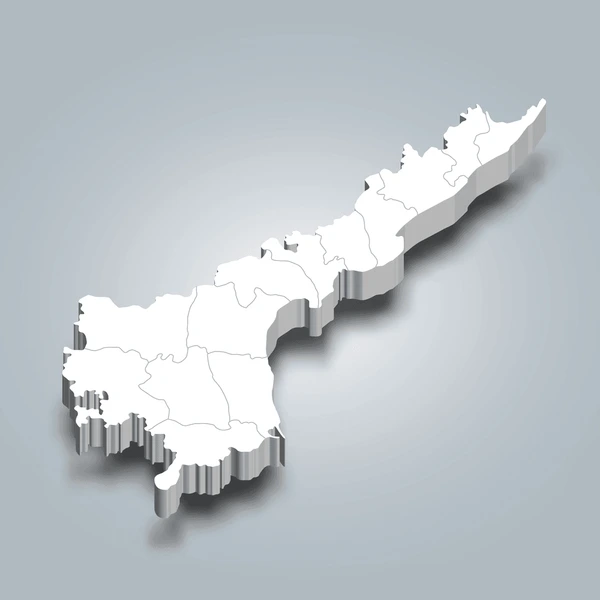

Andhrapradesh

- Capital: Amaravati.
- Geography: Borders the Bay of Bengal, Telangana, Karnataka, Tamil Nadu, and Odisha, bisected by the Godavari and Krishna rivers.
- Language: Telugu.
- History: Formed from the Telugu-speaking regions of Andhra State and Hyderabad State in 1956, with a history tracing back to the Satavahanas.
- Dance: Home to the classical Kuchipudi dance form.
- Arts: Strong traditions in painting and architecture.